1. PDC con Samba
1.1 Configuración del PDC
Hacemos la instalación de samba en el servidor.
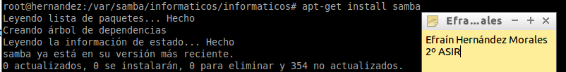Creamos una copia de seguridad del archivo de configuración de samba.
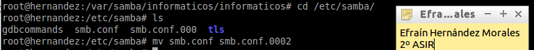Ahora agregamos un smb.conf con la siguiente configuración.
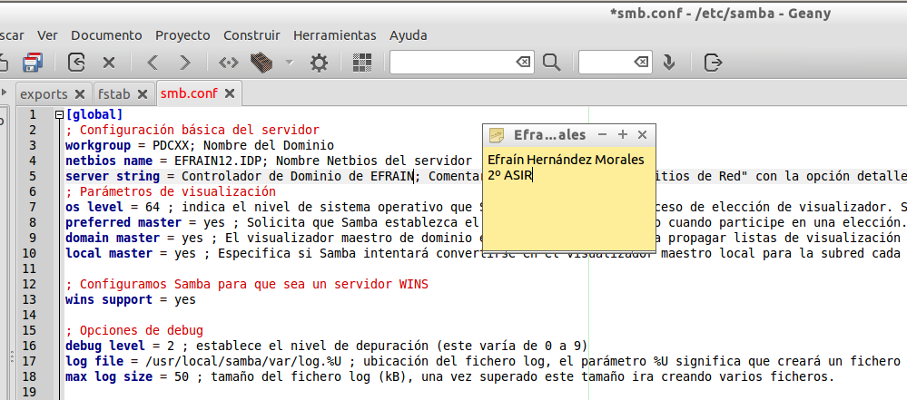Creamos las siguientes carpetas:
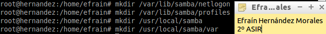1.1 Configuraciones de Red
Configuramos la ip del servidor en modo estático:
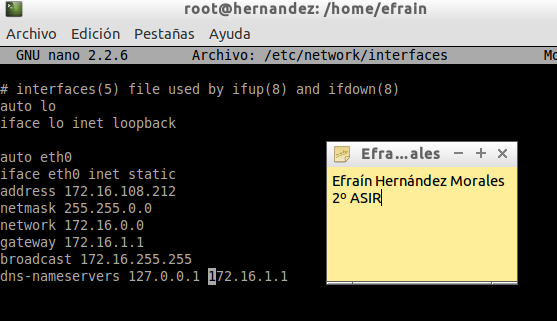Configuramos otro cliente linux con otra ip diferente:
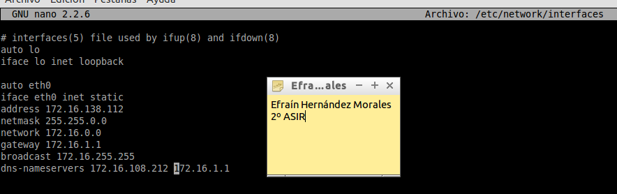Configuramos otro cliente, esta vez, windows con otra ip diferente:
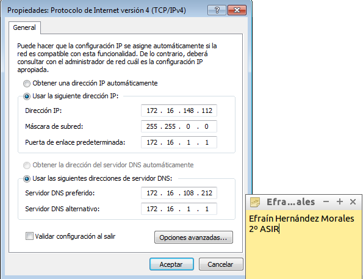Ahora en el cliente linux le cambiamos el hostname con el correspondiente a la práctica:
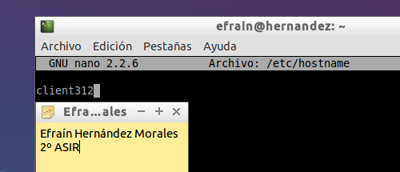Ahora en el cliente windows le cambiamos el nombre de equipo con el correspondiente a la práctica:
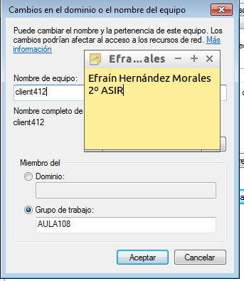Por último, hacemos comprobaciones para ver si entre ambas máquinas se ven con ping.
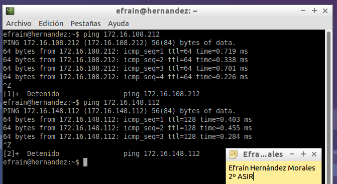Ahora vemos si funciona el nslookup para ver si está bien la resolución de nombres.
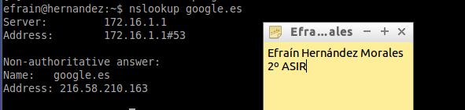2. Cuenta UNIX de máquina
Crear el grupo "machines" en el servidor.
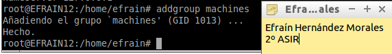Ahora vamos a crear las cuentas de máquina "client3" y "client4".
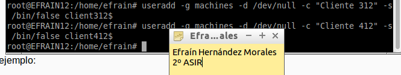Bloqueamos la cuenta Unix para evitar el acceso a una shell.
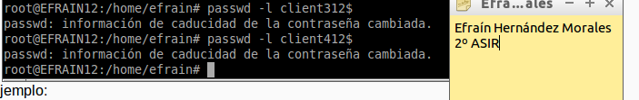2.1 Cuenta Samba para la máquina
Vamos a crear la cuenta Samba de la máquina. La opcion –m indica que se trata de una cuenta de tipo máquina.
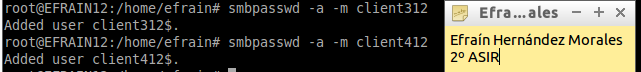2.2 Cuenta UNIX+Samba para cada usuario
Crear el grupo "enterprise", con los usuarios "kirk", "spock", "sulu".
Crear el grupo "borg" con los usuarios "borg1", "borg2" y "borg3".
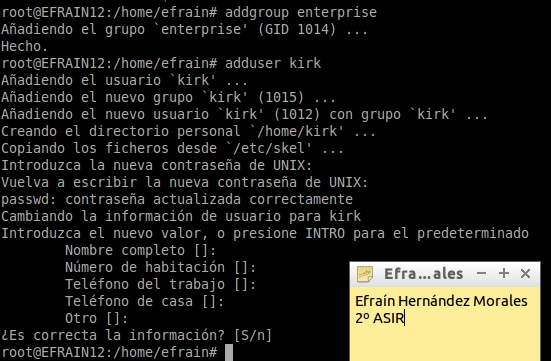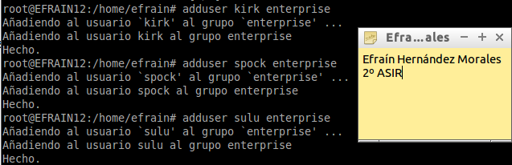
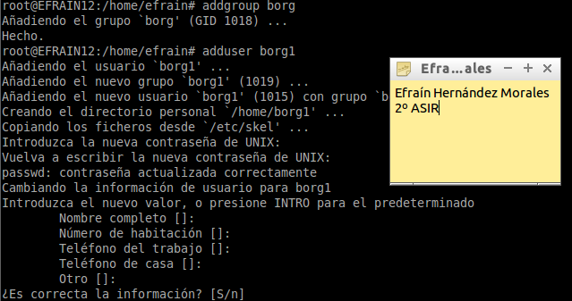
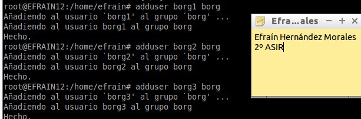
En el servidor, vamos crear las cuentas Samba: Para todos los usuarios anteriores, y para el usuario root.
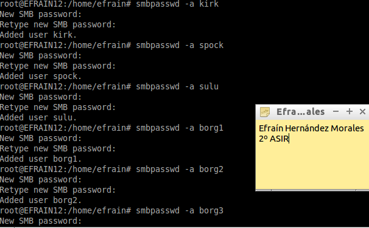Además es conveniente crear la carpeta del perfil de cada usuario y poner los permisos correspondientes.
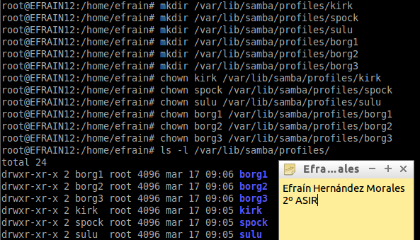2.3 Unir un Cliente Windows al dominio
Modificar el registro de cada host con Windows 7 para agregar las siguientes claves, ubicadas en "HKEY_LOCAL_MACHINE\SYSTEM\CurrentControlSet\services\LanmanWorkstation\Parameters":
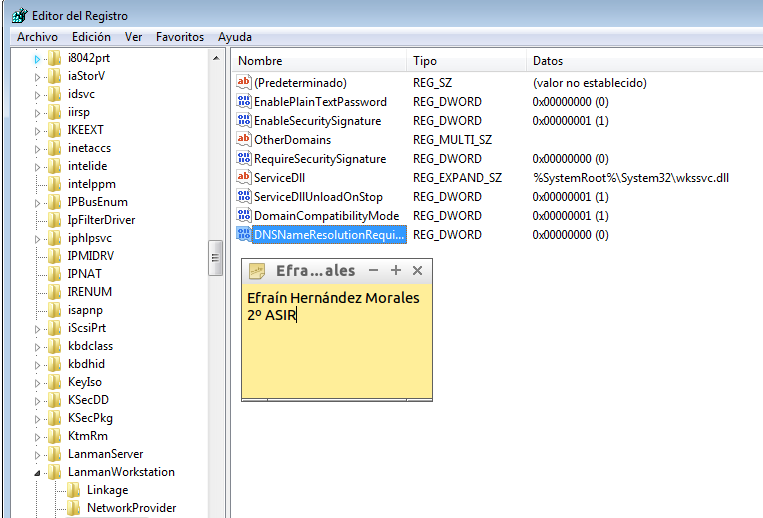Y alterar las que se muestran debajo, ubicadas en "HKEY_LOCAL_MACHINE\SYSTEM\CurrentControlSet\services\Netlogon\Parameters":
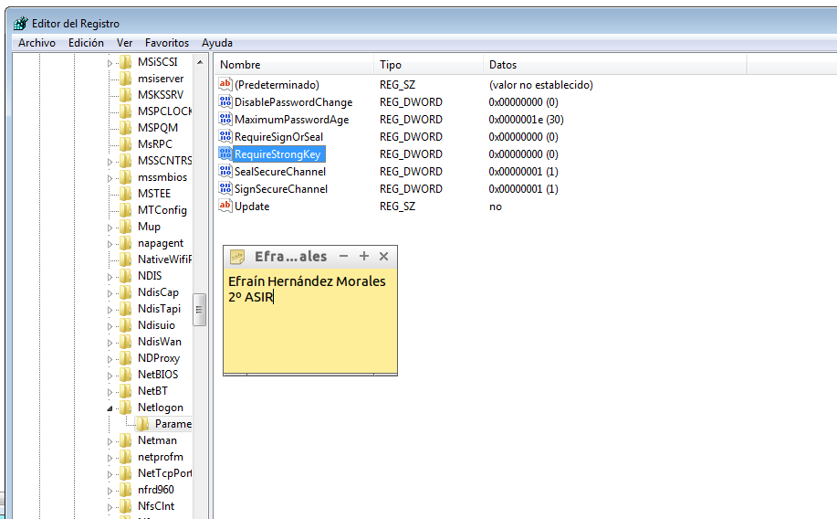Vamos a unir el cliente al dominio, para ello introduciremos el nombre del dominio, nos pedirá una contraseña con derechos para agregar máquinas al dominio, esta será la de root del PDC. Se supone que previamente habremos creado su cuenta samba con el comando smbpasswd -a root.
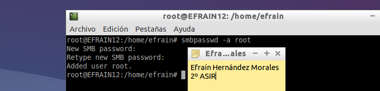Nos unimos al dominio.
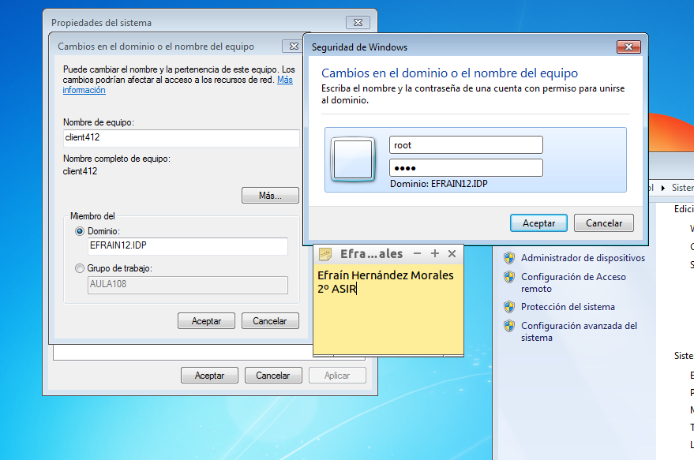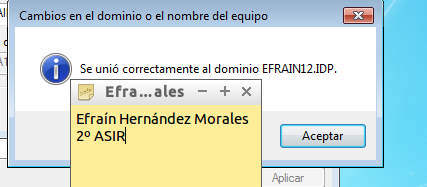
Iniciamos sesión con un usuario de samba.

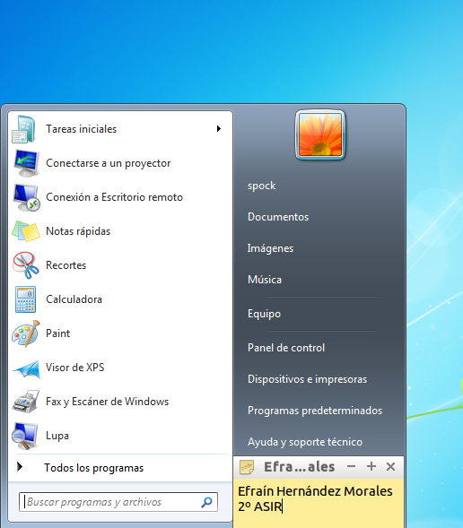